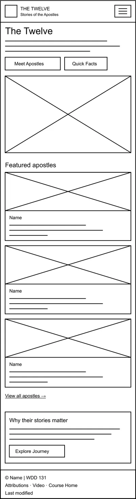
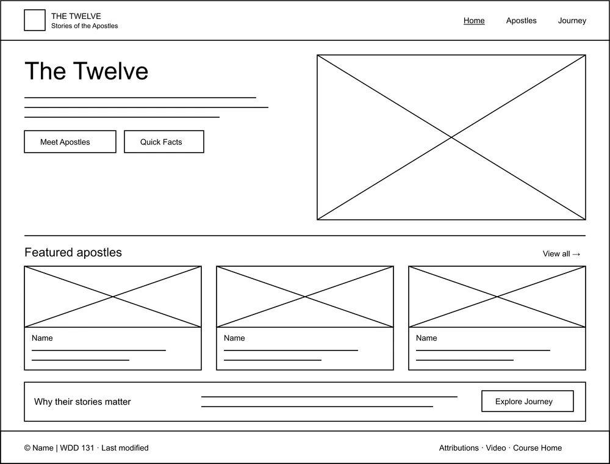

Site Plan
Site Name
The Twelve: Stories of the Apostles
- The New Testament often calls the apostles "the Twelve", so the name is short and easy to remember.
- "Stories of the Apostles" shows that the site is about their lives and stories.
Optional domain: thetwelve-stories.org
Site Purpose
The site introduces visitors to the twelve apostles of Jesus Christ and tells their stories. Each apostle will have a short biography, important events from his life, interesting facts, places connected with his ministry and references to the New Testament.
Each apostle is shown with a classic painting from Wikimedia Commons, so the site also works like a small art gallery. All images are public domain and listed on an Attributions page.
Pages: Home, Apostles, Journey.
Scenarios
- Who were the twelve apostles?
- What did Peter do before he followed Jesus?
- Where can I read about Thomas in the New Testament?
- Which places did the apostles travel to?
Color Schema
#F5EFE0 - background
#2B2118 - text, header, footer
#7B2D26 - headings, links, buttons
Typography
Cinzel: headings and apostle names
Peter, Andrew, James and John
Lora: body text
Follow me, and I will make you fishers of men. (Matthew 4:19)
Wireframes

